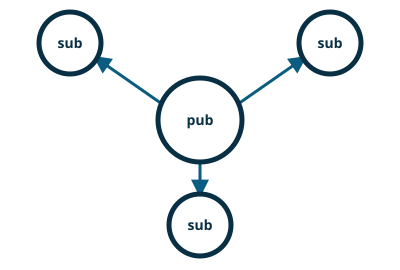

pynng / Python pattern guide

PUB / SUB — Topics and Broadcast
PUB / SUB broadcasts messages, while subscribers choose the topics they receive.
pynng is an independently maintained Python binding for NNG. Its maintainers and release cycle are separate from the NNG core project.
This example is sourced from the project’s default branch. See the upstream example for its current history.
pubsub.py
"""
This pattern is used to allow a single broadcaster to publish messages to many subscribers,
which may choose to limit which messages they receive.
"""
import datetime
import pynng
import trio
address = "ipc:///tmp/pubsub.ipc"
def get_current_date():
return str(datetime.datetime.now())
async def server(sock):
while True:
date = get_current_date()
print(f"SERVER: PUBLISHING DATE {date}")
await sock.asend(date.encode())
await trio.sleep(1)
async def client(name, max_msg=2):
with pynng.Sub0() as sock:
sock.subscribe("")
sock.dial(address)
while max_msg:
msg = await sock.arecv_msg()
print(f"CLIENT ({name}): RECEIVED {msg.bytes.decode()}")
max_msg -= 1
async def main():
# publisher publishes the date forever, once per second, and clients print as they
# receive the date
with pynng.Pub0(listen=address) as pub:
async with trio.open_nursery() as nursery:
nursery.start_soon(server, pub)
nursery.start_soon(client, "client0", 2)
nursery.start_soon(client, "client1", 3)
nursery.start_soon(client, "client2", 4)
if __name__ == "__main__":
try:
trio.run(main)
except KeyboardInterrupt:
# that's the way the program *should* end
pass
Run it
python -m pip install pynng trio
python pubsub.py